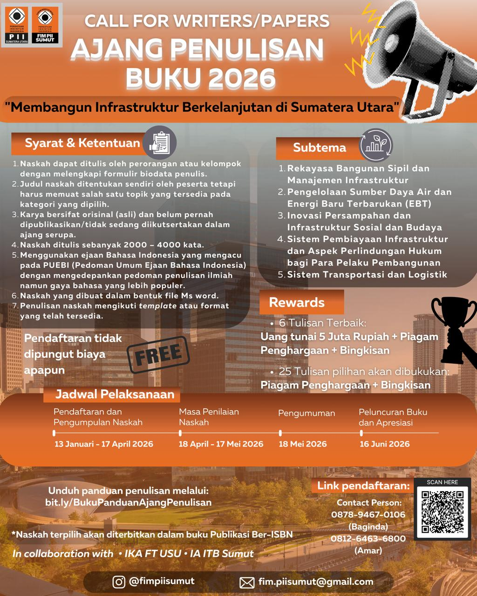

Membangun Infrastruktur Berkelanjutan di Sumatera Utara
Persatuan Insinyur Indonesia Wilayah Sumatera Utara berkolaborasi dengan Ikatan Alumni Fakultas Teknik Universitas Sumatera Utara dan Ikatan Alumni Institut Teknologi Bandung Daerah Sumatera Utara akan menerbitkan buku bunga rampai tahun 2026 dengan tema:
"Membangun Infrastruktur Berkelanjutan di Kota Medan – Provinsi Sumatera Utara."
Kegiatan ini berbentuk ajang pengumpulan tulisan bernas dari para pakar/ahli dan masyarakat umum. Enam tulisan terbaik akan mendapatkan apresiasi dan kesempatan presentasi saat acara peluncuran buku.

Tema: Membangun Infrastruktur Berkelanjutan di Sumatera Utara. Peserta mengirimkan karya tulis ilmiah populer (2.000–4.000 kata) yang mudah dipahami berbagai kalangan.
Terbuka untuk praktisi, akademisi, peneliti, pemerhati, masyarakat umum, dan budayawan. Topik pilihan antara lain:
Tim reviewer independen akan menyaring sekitar 25 tulisan untuk dibukukan. Enam terbaik berhak pada apresiasi dan presentasi. Kriteria meliputi kesesuaian topik, orisinalitas, kepopuleran bahasa, analisis/solusi, dan sistematika.
| Kegiatan | Waktu |
|---|---|
| Pendaftaran & Pengumpulan Naskah | 9 Januari – 17 April 2026 |
| Masa Penilaian Naskah | 18 April – 17 Mei 2026 |
| Pengumuman | 18 Mei 2026 |
| Peluncuran Buku & Apresiasi | 16 Juni 2026 |
PII Wilayah Sumatera Utara
Alamat: Jl. Dr. Mansur No. 9, Padang Bulan, Medan Baru, Medan
Email: fim.piisumut@gmail.com
Telp: 0853-6244-8434 (Rizki)
Kami sangat menghargai masukan dan saran Anda untuk meningkatkan kualitas ajang penulisan buku ini. Silakan isi form di bawah: